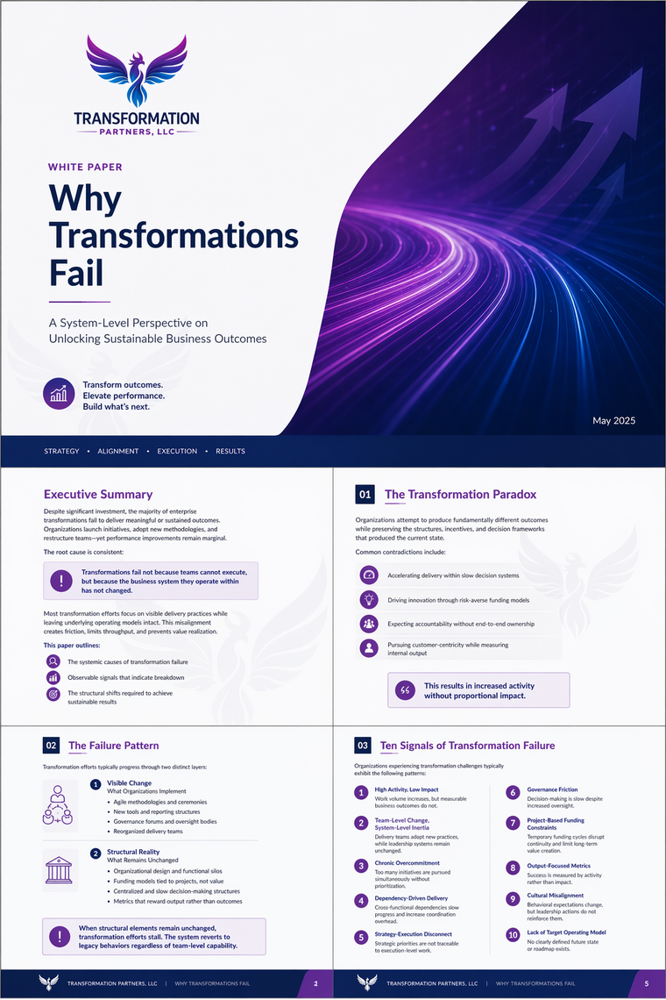

Insights & Resources
Thinking That Comes From Doing.
White papers and case studies drawn from two decades of enterprise transformation work. No theory without practice behind it.
Featured White Paper
Why Transformations Fail.

White Paper · System-Level Perspective
A System-Level Perspective on Unlocking Sustainable Business Outcomes
Transformations fail not because teams cannot execute, but because the business system they operate within has not changed. This paper outlines the systemic causes of transformation failure, ten observable signals of breakdown, and the structural shifts required to achieve sustainable results.
Download the White PaperLibrary
White Papers & Case Studies.
White Paper
Accelerating Value Delivery
An integrated system for turning strategy into delivered value: strategy-driven alignment, Definitions of Ready and Done, and governance designed to accelerate rather than slow the flow of work.
Case Studies
Enterprise Transformation Case Studies
A boardroom briefing on real engagements: multi-state call center overhauls, global operations redesign, ERP transformation governance, and the measurable outcomes each delivered.
Service Overview
The Transformation Management Office
How a TMO becomes the operating system of your transformation: six integrated functions, one governance model, and one view of value realized.
Want to Go Deeper?
If something in these papers looks like your organization, let's talk about what's actually happening.
Schedule a Conversation